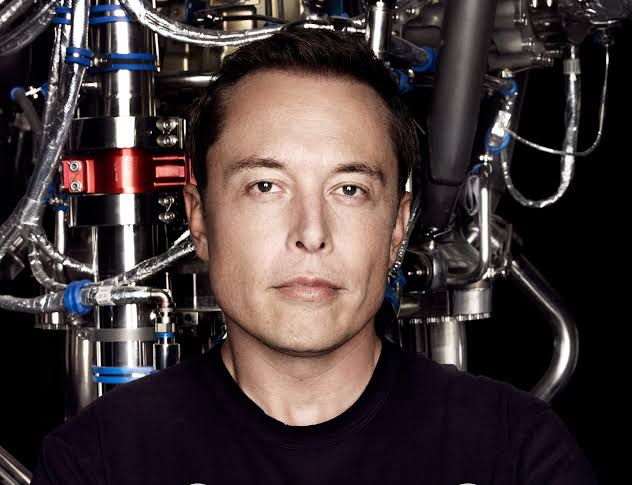

Tecnología · Ciencia · Ingeniería · Sustainability
Mi trayectoria en breve
Soy Joaquín, un estudiante apasionado por la tecnología que quiere convertir lo que aprende en algo útil para los demás. Empecé programando y trabajando con robots; con el tiempo descubrí que la ciencia y la ingeniería pueden servir directamente a las personas que me rodean.
Mi camino está guiado por tres ejes: aprender para enseñar, dominar las herramientas del futuro —como la inteligencia artificial— y cuidar el lugar donde vivo. Quiero ser la persona que le muestre a otros niños de mi comunidad que la tecnología es una herramienta real, al alcance de todos.
Primeros pasos con electrónica y programación: LEDs, motores, sensores y lógica de control. Aprendí a pensar como ingeniero, descomponiendo un problema grande en partes pequeñas y resolubles.
Trabajo con mBot y microcontroladores, construyendo robots que detectan y reaccionan a su entorno. Cada proyecto es un experimento para entender mejor cómo funciona la tecnología por dentro.
Compartir. No me conformo con entender algo yo solo: mi meta es transmitirlo a los niños de mi comunidad, porque el conocimiento que no se comparte se pierde.
El progreso tecnológico solo vale si deja un ambiente mejor. Por eso también me interesa la sostenibilidad y el desarrollo de soluciones limpias.
Mi ruta de aprendizaje mes a mes
Test de diagnóstico para Makeblock mBot. Programa de verificación por etapas que comprueba el correcto funcionamiento de LEDs, zumbador, motores y sensores básicos del robot (seguidor de línea y botón). El objetivo es diagnosticar qué componente falla antes de empezar a programar comportamiento.
Robot seguidor de línea autónomo. Implementar control PID sobre los sensores infrarrojos para que el mBot recorra circuitos complejos sin perderse, registrando sus sensores en el Monitor Serie.
Primer proyecto de STEM. Construir y documentar un experimento completo de ciencia, tecnología, robótica, ingeniería y matemáticas para poder replicarlo como taller con niños de mi comunidad.
Curso virtual de STEM. Iniciar la formación en línea para reforzar capacidades en tecnología, ciencia e ingeniería, y abrirme al mundo de la inteligencia artificial.
Prototipo de reciclaje inteligente. Un sistema con Arduino que detecta el tipo de residuo y separa automáticamente los materiales reciclables, y depositarlos luego en los contenedores correctos.
Introducción al machine learning. Entrenar un primer modelo con tutoriales y datasets propios para aprender los fundamentos de la IA desde cero.
Taller de robótica en mi comunidad. Reunir a niños del barrio para enseñarles a programar y construir su primer robot. El proyecto que más me importa del año.
Robot de limpieza con IA. Un vehículo autónomo que combina sensores, visión por computadora y machine learning para identificar y recoger residuos en calles y áreas públicas.
Preparación para la universidad. Consolidar portafolio, CV y cartas de recomendación; repasar matemáticas, física y programación para el proceso de admisión.
Postulación al MIT. Presentar mi aplicación a la universidad con el propósito de seguir profundizando en inteligencia artificial y ingeniería.
Estudio de mercado y plan de negocio. Investigar la situación de residuos en mi comunidad, definir la propuesta de valor y calcular los costos de arranque de la empresa.
Resumen anual y balance. Documentar todo lo aprendido, medir cuánto avancé respecto a mis objetivos y trazar la hoja de ruta del 2027.
Tres metas que guían mi camino
Mi primer objetivo es entrar al curso virtual de STEM con el propósito de ganarme la certificación y disparar mis capacidades, especialmente en tecnología, ciencia e ingeniería. No lo hago solo por mí: la verdadera meta es poder aprender hoy lo que mañana voy a enseñarles a los niños de mi comunidad.
Como segundo objetivo, me postreulo a la universidad del MIT. Es el paso para seguir mejorando en lo que más me apasiona: la inteligencia artificial. Quiero formarme en una institución de élite, rodeado de los mejores, y llevar ese conocimiento a un nivel de investigación real.
Y como tercer y último objetivo, al graduarme voy a empezar una empresa propia. Necesito dos cosas: ganar dinero y ganar experiencia real como profesional. Y lo haré para resolver un problema de mi comunidad: ecosistemas limpios, sin residuos químicos, cuidando el ambiente que le dejo a los niños que quiero enseñar.